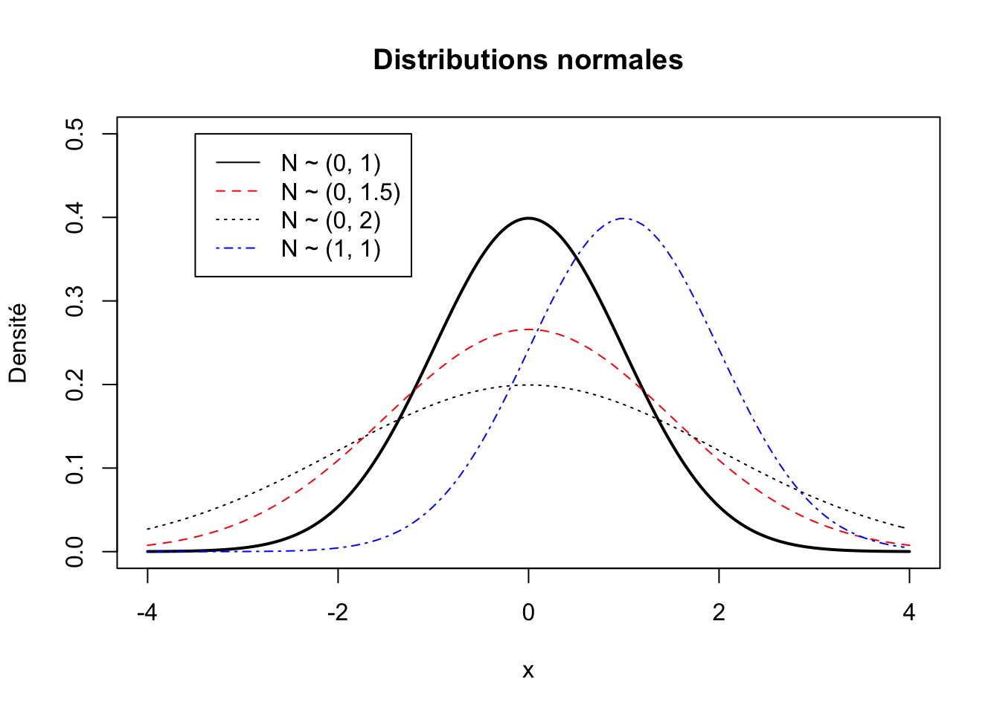
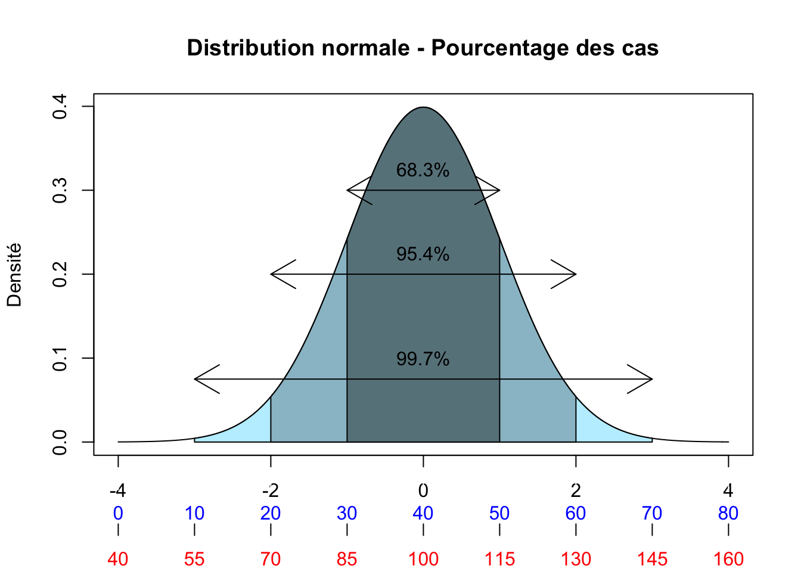
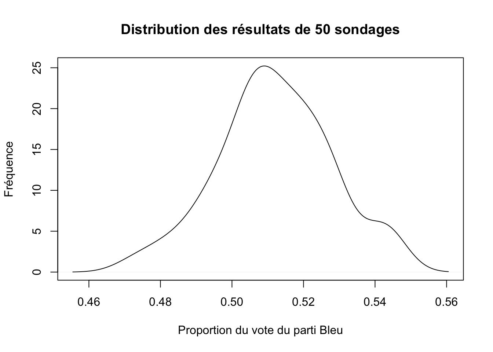
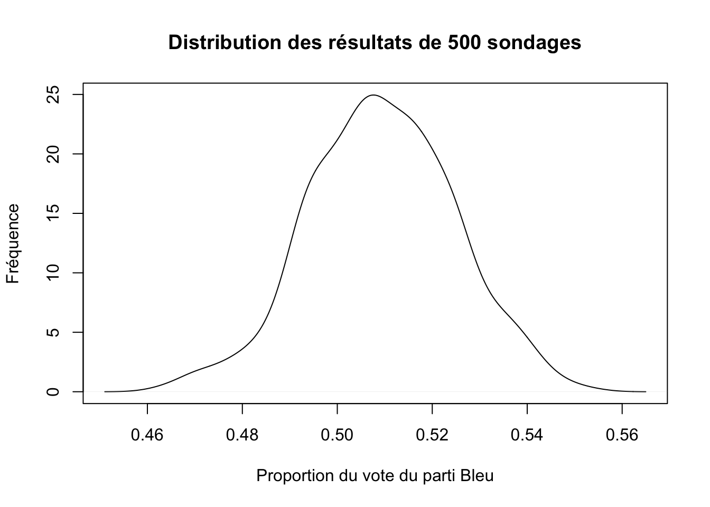
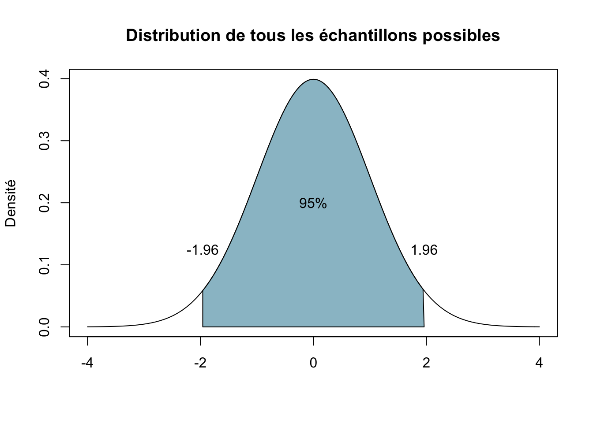

Chapitre 4 Inférer
Durant les vacances de Noël, j’étais dans un souper familial et nous discutions des élections américaines. Ma tante était debout devant le poêle et, pendant qu’elle faisait réchauffer une soupe, se disait surprise de l’élection de Trump. Après quelques soupirs, elle déclara :
«En tout cas, moi les sondages, je commence à ne plus trop y croire. Tu ne peux pas prendre juste 1000 personnes sur une population de plusieurs millions et penser prévoir comment ils vont voter».
Puis, après avoir bien brassé sa soupe, elle prit une petite cuillérée pour y goûter et, semblant juger qu’elle était adéquatement assaisonnée, lança avec assurance : «Ouin, elle va être bonne cette soupe-là!». Votre humble serviteur n’a pu s’empêcher de remarquer l’ironie de la situation : ma tante qui procédait avec assurance à l’échantillonnage de sa soupe, à peine quelques secondes après avoir déclaré ne pas croire à l’échantillonnage.
Ma tante a bien brassé la soupe pour que les éléments solides ne soient pas tous dans le fond du chaudron. Autrement dit, elle voulait, consciemment ou non, s’assurer que tous les éléments de sa soupe aient une chance égale d’aboutir dans sa cuiller. Puis elle en a pris une cuillérée et généralisa que ce que sa soupe goûtait dans sa cuiller devait être suffisamment semblable à ce que le reste la soupe dans le chaudron devait goûter. Dans le doute, ou si elle avait besoin de plus de précision, elle aurait pu prendre un second échantillon, mais elle ne l’a pas fait.
Pourtant, quelqu’un qui ne croit pas à l’échantillonnage aurait littéralement dû goûter à tout le chaudron pour savoir si sa soupe était correctement assaisonnée. Évidemment, aucun invité n’aurait eu de soupe et il est fort probable que ma tante n’aurait alors pas mangé de dinde, mais elle n’aurait alors pas eu à passer par l’échantillonnage. Cette petite anecdote peut vous faire sourire, mais réalisez que vous appliquez tous des techniques d’échantillonnage dans votre quotidien, autrement il vous serait tout simplement impossible d’accomplir plusieurs tâches pourtant simples et banales.
Évidemment, les êtres humains ne sont pas des molécules et il faut donc forcément en tenir compte lorsque nous analysons des statistiques qui sont influencées par le libre arbitre des individus. Cependant, en gardant en tête ces précautions, il demeure que les notions d’inférence statistiques peuvent aussi être appliquées aux comportements humains. Bien comprendre comment fonctionne l’inférence statistique vous permettra ensuite de mieux juger d’une variété de résultats qui, bien que «statistiquement adéquats», peuvent être critiquables étant donné que nous nous intéressons à des humains plutôt qu’à des molécules. Cependant, vous ne pourrez pas réellement poser un jugement informé sur ces situations sans bien comprendre l’inférence statistique. Malheuseuement, plusieurs comprennent mal ce qu’est l’inférence statistique et ont tendance à prendre la «significativité statistique» pour un absolu objectif qui peut se substituer au jugement du chercheur. Ce n’est jamais le cas. C’est à vous d’interpréter adéquatement ce que disent les chiffres et le fait que quelque chose soit «statistiquement significatif» ne constitue pas un sceau de véracité.
Afin de mieux saisir comment au juste fonctionne l’inférence statistique, nous allons utiliser l’exemple totalement fictif d’une élection dans laquelle le parti Rouge, dirigé par Gros-Cochon LeTapon-Tâteur, est en compétition avec le parti Bleu, dirigé par Madame Black-Berry duCourriel-Qui-Coule. Nous allons simuler les intentions de vote d’une population de 10 millions d’électeurs et nous prendrons ensuite aléatoirement des sondages de 1000 personnes dans cette population. Nous pourrons donc voir comment les sondages peuvent varier autour des véritables intentions de vote des 10 millions d’électeurs.
4.1 L’inférence statistique, quelques notions théoriques
Toutes les variables ont une certaine distribution qui a une certaine forme. L’une des distributions les plus importantes en statistiques est la distribution normale. Une distribution normale a une moyenne de \(\mu\) (prononcé «mu») et un écart-type de \(\sigma\) (pronconé «sigma»). Vous verrez souvent l’expression : \(N\sim(\mu, \sigma)\) pour dire qu’une variable est normalement distribuée avec une moyenne de \(\mu\) et un écart-type de \(\sigma\). Bien sûr, la moyenne et l’écart-type d’une distribution peuvent varier. Voici quatre exemples de distributions normales. Les trois premières distributions ont une moyenne de 0, mais elles varient par leur écart-type; la distribution en bleu a quant à elle une moyenne de 1 et un écart-type de 1.

La mesure en unité d’écart-type est standardisée, c’est-à-dire que peu importe l’échelle de mesure originale, la distribution d’une variable peut être ramenée à une échelle mesurée en unité d’écart-type afin de pouvoir adéquatement comparer la distribution d’une variable à une autre variable mesurée différemment5.
Par exemple, la figure suivante montre la distribution de deux variables \(N\sim(\mu, \sigma)\), une variable bleue et une variable rouge. L’échelle en noir est en unités d’écarts-types, alors que les échelles en bleu et en rouge peuvent être pensées comme deux possibilités d’échelles «originales» sur lesquelles les variables ont été mesurées. L’échelle en bleu va de 0 à 80 avec une moyenne de 40, celle en rouge de 40 à 160 avec une moyenne de 100 (on peut par exemple songer à la mesure du QI qui a aussi une moyenne de 100 et un écart-type de 15). Mais lorsque ces échelles sont ramenées en unité d’écarts-types, elles peuvent alors être adéquatement comparées. On remarque qu’en plaçant les échelles originales sur une échelle comparable, leur distribution est identique.
La raison tient à l’une des propriétés fondamentales de la loi normale : pour toute combinaison de moyenne et d’écart-type, il y aura toujours une proportion constante de cas entre la moyenne et un point quelconque situé à une certaine distance de la moyenne exprimée en écart-type. En observant la figure, on pourrait donc dire que, dans le cas de l’échelle bleue, il y a 95.4% des cas qui se situent entre 20 et 60, alors que 95% des cas se situent entre 85 et 115 dans le cas de la variable rouge.

Nous savons qu’il y aura toujours exactement 68.3% des cas situés à \(\pm 1\sigma\) (plus ou moins 1 écart-type). Il y aura aussi toujours 95.4% des cas situés à \(\pm 2\sigma\) et 99.7% des cas situés à \(\pm3\sigma\). Cela sera vrai peu importe l’échelle de mesure originale utilisée pour mesurer une variable.
Cette propriété est vraie pour la distribution illustrée ici, mais elle le serait tout autant pour une distribution qui aurait une apparence plus aplatie. On pourrait «aplatir» la distribution de la figure, mais l’échelle des écarts-types bougerait avec elle. Imaginez que, pour aplatir la distribution, vous tiriez de chaque côté de l’axe des abscisses (x), cela aurait pour effet d’étirer chaque côté de la distribution et donc de l’aplatir, mais l’échelle suivrait elle aussi.
4.1.1 Le théorème de la limite centrale
Nous venons de voir rapidement l’importance de la distribution normale, mais pour comprendre l’inférence statistique, il est important de saisir qu’il existe trois types de distributions.
- La distribution d’une population (N)
- Lors d’un rescencement
- Avec une moyenne \(\mu\) et un écart-type \(\sigma\)
- La distribution d’un échantillon (n)
- Lors d’un sondage
- Avec une moyenne \(\bar{x}\) (prononcé «x-barre») et un écart-type \(s\)
- La distribution de tous les échantillons possibles (distribution d’échantillonnage)
- Toutes les combinaisons possibles des cas qu’il est possible de tirer pour produire un échantillon n d’une population N.
Les deux premiers types de distributions sont relativement intuitifs, le troisième est cependant plus difficile à saisir. Imaginons la population formée des éléments A, B, C, D, E (N=5) et que nous voulions tirer un échantillon de taille 2 (n=2). Dans ce cas, tous les échantillons possibles correspondent à toutes les paires de lettres qu’il est possible de tirer à partir de la population. Dans notre cas, il a a 10 échantillons possibles : AB, AC, AD, AE, BC, BD, BE, CD, CE et DE. Le nombre total d’échantillons possibles peut être calculé à partir du NcN :
\[Ncn=\frac{N!}{ n!(N-n)! }\] Le signe ! signifie «factoriel», il c’est-à-dire que nous multiplions entre eux la suite de nombre qui vient avec le premier nombre jusqu’à arriver à 1. Dans notre exemple, cela donne: \[\frac { 5! }{ 2!(5-2)! } =\frac { 5\times 4\times 3\times 2\times 1 }{ 2\times 1\quad (3\times 2\times 1) } =\frac { 120 }{ 12 } =10\]
Dans notre exemple, il y a donc 10 échantillons possibles de 2 lettres dans notre population de 5 lettres. Imaginons maintenant une situation habituelle avec un sondage de 1000 répondants (n=1000) pour une population de 5 millions d’électeurs (N=5 000 000). Tous les échantillons possibles signifient alors toutes les possibilités d’échantillons de n=1000 qu’il est possible de tirer d’une population de 5 millions d’individus. Deux échantillons ne différant que par 1 seul individu sont ici considérés comme deux échantillons possibles distincts. Dans ce cas, le nombre d’échantillons possibles donne : \[Ncn=\frac { N! }{ n!(N-n)! }\] \[Ncn=\frac { 5 000 000! }{ 1000!(5 000 000-1000)! }\] \[Ncn = 27 000 000 000 000 000 000 000 000 000 000 000 000 000\] Le nombre d’échantillons possibles est tellement gros que nous ne savons même pas comment au juste nous devrions dire ce nombre. Vous comprenez donc que cette idée de «tous les échantillons possibles» n’est que théorique et ne peut jamais réellement être appliquée. Cependant, sans pour autant que nous fassions la démonstration mathématique, sachez simplement que le théorème de la limite centrale nous apprend qu’au fur et à mesure que le nombre d’échantillons augmente, la moyenne d’une variété de paramètres de ces échantillons se rapprochera de plus en plus de la «vraie» valeur des paramètres dans la population.
Attention ici, nous ne parlons pas de la moyenne d’une variable dans un échantillon, mais de la moyenne de la moyenne des échantillons. Si par exemple nous nous intéressons à la taille moyenne des femmes d’une population donnée, nous prenons un premier échantillon de 100 femmes et nous obtenons une moyenne de 167cm. Nous prenons ensuite un second échantillon et nous obtenons une moyenne de 172cm. Un troisième échantillon nous donne une moyenne de 169 cm. À mesure que nous augmentons le nombre d’échantillons, la moyenne de ceux-ci (ici, la moyenne de 167, 172 et 169), qui revient à la moyenne des moyennes dans les échantillons_ se rapprochera de plus en plus de la «vraie» valeur dans la population. Mathématiquement, il pourrait être démontré que la moyenne de tous les échantillons possibles (la «moyenne échantillonnale») est égale à la moyenne de la population. Par ailleurs, la disrtribution de ces moyennes d’échantillons tendra à devenir normale et cela sera d’autant plus vrai que la taille des échantillons individuels sera grande.
Si la taille de l’échantillon est de 30 ou plus, les trois choses suivantes seront vraies : - La moyenne de la distribution d’échantillonnage est identique à la moyenne de la population (\({ \mu }_{ \bar{x} }\)=\(\mu\)) - La distribution d’échantillonnage suit une distribution normale. - Son écart-type sera de \(\frac { \sigma }{ \sqrt { N } }\)
4.2 L’échantillonnage
Afin d’illustrer le théorème de la limite centrale, qui est plus facile à saisir en le «voyant» à l’oeuvre qu’en tentant de le comprendre abstraitement, nous allons simuler des données d’une population de 10 millions de personnes et allons ensuite faire des «sondages» aléatoires dans cette population. Nous utiliserons deux scénarios. D’abord une élection entre deux partis, l’un étant réellement à 55% et l’autre à 45% d’intentions de vote dans la population. Puis nous simulerons une situation où la course entre ces deux partis est serrée, l’un étant réellement à 51% et l’autre à 49%. Nous observerons ce qui se produit lorsque nous augmentons la quantité de «sondages», et aussi de quoi ont l’air ces sondages lorsque le véritable écart entre les deux partis est relativement petit.
4.2.1 Exemple d’une élection à deux partis (55-45)
Nous simulons d’abord les données de la population de 10 millions d’individus
# Créons les données de la population entière de 10M d'électeurs.
population <- sample(c(1, 0), size=10000000, rep=TRUE, prob=c(.55,.45))
# L'objet population contient donc 5 millions de lignes (individus) qui votent
# pour les différents partis dans les proportions décrites.
ftable(population) # Voir le nombre d'individus qui votent pour chaque parti.## population 0 1
##
## 4499648 5500352# Bien sûr, les proportions seraient plus informatives. Demandons-les à R.
prop.table(table(population)) # Pour en voir les proportions## population
## 0 1
## 0.4499648 0.5500352Nous voyons donc qu’il y a effectivement 55.00352% des gens qui ont l’entention de voter pour le parti bleu et 44.99648% qui ont l’intention de voter pour le parti rouge. Ce sont ici les vraies intentions de vote dans notre population. Imaginons maintenant que nous fassions un sondage aléatoire de 1000 individus dans cette population.
# Faisons un premier sondage aléatoire de cette population
# avec un échantillon de 1000 personnes.
sondage.1 <- sample(population, 1000, replace=FALSE)
prop.table(table(sondage.1))## sondage.1
## 0 1
## 0.473 0.527Nous obtenons ici qu’une proportion de 0.527 des «répondants» affirment vouloir voter pour le parti bleu et 0.473 pour le parti rouge. Faisons un deuxième sondage aléatoire.
# Un deuxième sondage
sondage.2 <- sample(population, 1000, replace=FALSE)
prop.table(table(sondage.2))## sondage.2
## 0 1
## 0.444 0.556Nous obtenons 55.6% pour le parti bleu et 44.4% pour le parti rouge. Faisons un troisième sondage.
# Un troisième sondage
sondage.3 <- sample(population, 1000, replace=FALSE)
prop.table(table(sondage.3))## sondage.3
## 0 1
## 0.475 0.525Ici, nous obtenons que 52.5% des répondants affirment vouloir voter pour le parti bleu, alors que 47.5 disent vouloir voter pour le parti rouge. Tentons un quatrième sondage.
# Un quatrième sondage
sondage.4 <- sample(population, 1000, replace=FALSE)
prop.table(table(sondage.4))## sondage.4
## 0 1
## 0.441 0.559Avec ce quatrième sondage, nous obtenons que 55.9% des répondants affirment vouloir voter pour le parti bleu, alors que 44.1. Essayons un dernier sondage.
# Un cinquième sondage
sondage.5 <- sample(population, 1000, replace=FALSE)
prop.table(table(sondage.5))## sondage.5
## 0 1
## 0.457 0.543Avec ce cinquième sondage, nous obtenons que 54.3% des répondants affirment vouloir voter pour le parti bleu, alors que 45.7.
Nous pourrions continuer ainsi à faire des sondages, mais remarquez deux choses : les résultats de chaque sondage ne sont par forcément «pile» sur les «vrais» chiffres dans la population (55% pour les bleus et 45% pour les rouges), mais ils tournent globalement autour de ceux-ci. Aussi, si nous faisons la moyenne des résultats obtenus dans ces cinq sondages, nous obtiendrions un résultat qui se rapprocherait encore plus de la vraie valeur. Essayons-le.
# Moyenne des résultats des 5 sondages pour le parti bleu
mean(prop.table(table(sondage.1))[2],
prop.table(table(sondage.2))[2],
prop.table(table(sondage.3))[2],
prop.table(table(sondage.4))[2],
prop.table(table(sondage.5))[2]
)## [1] 0.527# Moyenne des résultats des 5 sondages pour le parti rouge
mean(prop.table(table(sondage.1))[1],
prop.table(table(sondage.2))[1],
prop.table(table(sondage.3))[1],
prop.table(table(sondage.4))[1],
prop.table(table(sondage.5))[1]
)## [1] 0.473Nous n’avons que cinq sondages et notre moyenne n’est donc pas pile sur les vrais résultats de la population, mais nous nous en approchons beaucoup. Imaginons que nous fassions 50 sondages plutôt que seulement 5.
data.sondages <- list()
for(i in 1:50){ # Ceci est un "loop", nous faisons la même commande 50 fois
data.sondages[[i]] <- sample(population, 1000, replace=FALSE)
}
prop.sondages = vector()
for(i in 1 :50){
prop.sondages[i] <- mean(data.sondages[[i]])
}
mean(prop.sondages)## [1] 0.55378On pourrait difficilement faire mieux. Ceci dit, ici notre exemple posait que les vraies valeurs étaient à 55% et 45%, soit une différence de 10 points de pourcentage entre les deux partis. Dans la réalité, il arrive souvent que les vraies intentions de vote soient beaucoup plus serrées. Imaginons donc que nous une course très serrée dans laquelle le parti Bleu ne mène que par 2 points de pourcentage.
4.2.2 Exemple d’une élection serrée (51-49)
# Créons les données de la population entière de 10M d'électeurs.
population.serre <- sample(c(1, 0), size=10000000, rep=TRUE, prob=c(.51,.49))
# L'objet population contient donc 5 millions de lignes (individus) qui votent
# pour les différents partis dans les proportions décrites.
prop.table(table(population)) # Pour en voir les proportions## population
## 0 1
## 0.4499648 0.5500352Faisons 50 sondages.
data.sondages_serre <- list()
for(i in 1:50){ # Ceci est un "loop", même commande 50 fois i=1:50
data.sondages_serre[[i]] <- sample(population.serre, 1000, replace=FALSE)
}
prop.sondages_serre = vector()
for(i in 1 :50){
prop.sondages_serre[i] <- mean(data.sondages_serre[[i]])
}
mean(prop.sondages_serre)## [1] 0.512Vous voyez que nous obtenons une moyenne de nos 50 sondages qui ressemble à ce qui devrait être la vraie valeur de 0.51 pour le parti Bleu. Ceci étant, tous nos sondages n’ont pas, individuellement la même moyenne. Visualisons la distribution de nos sondages pour voir comment se sont répartis les résultats de tous les sondages.
densite_50 <- density(prop.sondages_serre)
plot(densite_50,
main="Distribution des résultats de 50 sondages",
ylab="Fréquence",
xlab="Proportion du vote du parti Bleu")
Nous voyons que la distribution des résultats est presque normale, mais pas complètement. La plupart des sondages sont autour de la vraie valeur de 0.51, mais certains en sont plus éloignés. Imaginons maintenant que nous fassions 500 sondages plutôt que 50. Voyons voir.
data.sondages_serre_500 <- list()
for(i in 1:500){
data.sondages_serre_500[[i]] <- sample(population.serre, 1000, replace=FALSE)
}
prop.sondages_serre_500 = vector()
for(i in 1:500){
prop.sondages_serre_500[i] <- mean(data.sondages_serre_500[[i]])
}
mean(prop.sondages_serre_500)## [1] 0.509358Encore une fois, vous voyez que nous obtenons une moyenne très près de ce qui devrait être la vraie valeur de 0.51 pour le parti Bleu. Visualisons encore la distribution pour voir comment se sont répartis les résultats de tous les sondages.
densite_500 <- density(prop.sondages_serre_500)
plot(densite_500,
main="Distribution des résultats de 500 sondages",
ylab="Fréquence",
xlab="Proportion du vote du parti Bleu")
Clairement, cette distribution est beaucoup plus près d’une distribution normale que ce que nous observions avec «seulement» 50 sondages. Essayons avec 5000.
data.sondages_serre_5000 <- list()
for(i in 1:5000){
data.sondages_serre_5000[[i]] <- sample(population.serre, 1000, replace=FALSE)
}
prop.sondages_serre_5000 = vector()
for(i in 1:5000){
prop.sondages_serre_5000[i] <- mean(data.sondages_serre_5000[[i]])
}
densite_5000 <- density(prop.sondages_serre_5000)
plot(densite_5000,
main="Distribution des résultats de 5000 sondages",
ylab="Fréquence",
xlab="Proportion du vote du parti Bleu")Clairement, la distribution de tous les sondages commence à prendre la forme d’une distribution normale avec une moyenne centrée autour de la vraie valeur de 0.51. Remarquez aussi que quelques sondages s’écartent de cette valeur, il y en a par exemple qui placent le parti Bleu à 0.46 et d’autres à 0.56, mais la très vaste majorité des sondages sont rapprochés de la vraie valeur de 0.51. Remarquez aussi qu’avec une différence de seulement 2 points de pourcentage entre les deux partis (dans la population), il y a quand même une grande quantité de sondages qui donnent moins de 50% des voix au parti Bleu, même si nous savons que ce dernier devrait être à 51%. Également, si nous comparons cette distribution avec 5000 sondages avec celle que nous avons obtenu avec 500 sondages, nous voyons aussi que la distribution avec 5000 sondages est plus resserrée, son écart-type est plus faible.
Cette démonstration devrait vous aider à saisir pourquoi il ne faut pas trop s’affoler avec des mouvements de 1, 2 ou 3 points de pourcentages d’un sondage à l’autre. Deux sondages menés la même journée et exactement de la même manière pourront donner des résultats différents. Ces variations inévitables sont le simple fait des aléas de l’échantillonnage statistique. Si l’on prend également en compte que, contrairement à nos 10 millions d’individus fictifs, les vrais citoyens peuvent décider de ne pas répondre (donc l’échantillonnage n’est jamais parfaitement aléatoire parce que la non-réponse peu être plus probable chez certains groupes) et que les maisons de sondage peuvent poser les questions de manière légèrement différente (ce qui peut également entraîner de légères variations dans les résultats), on comprendra qu’il n’y a vraiment pas de quoi écrire à sa mère pour des variations de quelques points de pourcentage.
4.3 Du sondage à la population
Évidemment, on ne fait jamais 5000 sondages, ni même 500. La plupart du temps, nous n’avons qu’un seul sondage à partir duquel on veut tirer des inférences sur une population entière. Comme nous l’avons vu, bien que les résultats des sondages tendent à se rapprocher des véritables valeurs d’une population, les aléas de l’échantillonnage font en sorte que les valeurs que nous obtenons dans un sondage donné dévient des vraies valeurs. Ainsi, il est plus prudent de construire une marge d’erreur autour des résultats du sondage.
4.3.1 La marge d’erreur
Heureusement, grâce au théorème de la limite centrale, il est possible calculer avec précision un intervalle à l’intérieur duquel le véritable paramètre de la population devrait se retrouver, ce à un degré de confiance désiré. Généralement, le degré de confiance que nous visons est de 95%, c’est-à-dire que nous acceptons qu’il y ait 5% des chances que l’on se trompe en affirmant que le véritable paramètre de la population se retrouve à l’intérieur de l’interval que nous aurons calculé. Il convient cependant de remarquer que cette «ligne de démarcation» n’est que conventionnelle et a été fortement contestée récemment (voir notamment Benjamin et al. (2017) et la réponse de Lakens et al. (2017)).
Grâce au théorème de la limite centrale, nous savons que 95% des échantillons possibles donneront un pourcentage situé à plus ou moins 1.96 écart-types du vrai pourcentge. Nous savons cela grâce à la propriété de la distribution normale discutée plus haut : pour chaque combinaison de moyenne et d’écart-type, il y aura toujours une proportion constante de cas entre la moyenne et un point quelconque situé à une certaine distance de la moyenne exprimée en écart-type. Ici, nous voulons être certain à 95% de certidue, et donc nous savons que 95% des cas sont situés à l’intérieur de plus ou moins 1.96 écart-types. La figure suivante illustre la chose pour une distribution échantillonale ayant une moyenne de 0. 95% de tous les échantillons possibles nous donnerons un résultat situé dans la zone bleue.

Suivant cela, si nous voulons estimer le pourcentage \(\pi\) d’une population, nous pouvons le faire en utilisant le pourcentage p obtenu dans un sondage.6 L’équation suivante permet de calculer la marge d’erreur autour de notre pourcentage p à l’intérieur de laquelle nous avons 95% des chances de trouver le véritable pourcentge \(\pi\) dans la population.
\[\pi=p\pm 1,96 {\sigma}_{p}\]
Où l’écart-type de la distribution échantillonnale \({\sigma}_{p}\) est estimé à partir de l’écart-type s dans notre sondage.
\[{\sigma}_{p} = \frac { s }{ \sqrt { n } }\]
4.3.1.1 Test de la marge d’erreur du pourcentage (55-45)
# avec un échantillon de 1000 personnes.
sondage.1 <- sample(population, 1000, replace=FALSE)
prop.table(table(sondage.1))## sondage.1
## 0 1
## 0.424 0.576# Pour avoir l'écart-type
sd(sondage.1) # sd() pour standard deviation## [1] 0.4944375# Calculon Sigma_p
sigma_p <- sd(sondage.1)/sqrt(1000)
# Calculons l'intervalle de confiance à 95%
low_bound <- mean(sondage.1)-1.96*sigma_p
low_bound## [1] 0.5453544hi_bound <- mean(sondage.1)+1.96*sigma_p
hi_bound## [1] 0.6066456Donc, suivant notre calcul sur un sondage dans lequel le parti bleu avait 56% des intentions de vote, l’interval bas est de 0.5453544 et l’interval haut de 0.6066456. Suivant notre scénario, nous savons que le pourcentage \(\pi\) réel d’intention de vote dans la population est de 55%, ce qui est bel et bien à l’intérieur de notre interval de confiance. Évidemment, ici nous avons l’avantage de connaître la véritable valeur du pourcentage de la population puisque nous l’avons nous-mêmes créé, ce n’est évidemment normalement pas le cas.
4.3.1.2 Test de la marge d’erreur du pourcentage (51-49)
Juste histoire de s’amuser, tentons aussi l’expérience avec notre scénario d’élection serrée.
# avec un échantillon de 1000 personnes.
sondage.1_s <- sample(population.serre, 1000, replace=FALSE)
prop.table(table(sondage.1_s))## sondage.1_s
## 0 1
## 0.489 0.511# Pour avoir l'écart-type
sd(sondage.1_s) # sd() pour standard deviation## [1] 0.5001291sigma_p <- sd(sondage.1_s)/sqrt(1000)
mean(sondage.1_s)## [1] 0.511# Calculons l'intervalle de confiance à 95%
low_bound.s <- mean(sondage.1_s)-1.96*sigma_p
low_bound.s## [1] 0.4800017hi_bound.s <- mean(sondage.1_s)+1.96*sigma_p
hi_bound.s## [1] 0.5419983Ici, suivant notre calcul sur un sondage dans lequel le parti codé 1 avait 51.1 % des intentions de vote, l’intval bas est de 0.4800017 et l’interval haut de 0.5419983. Encore une fois, la vraie valeur du parti codé 1 est bien dans notre interval. Cependant, on remarque aussi que cet interval inclu la vraie valeur des intentions de vote du parti codé 0. Nous voyons donc que lorsque nous sommes devant une situation où les intentions de votes réelles dans la population sont très serrée, il est statistiquement très difficile d’établir avec confiance qu’un parti est réellement en avant d’un autre avec un seul sondage. la raison n’a ici rien à voir avec la fiabilité des méthodes statistiques elles-mêmes, mais est tout simplement lié à la nature même de la précision d’un échantillon et au fait que la précision requise pour «prédire» adéquatement le gagant d’une élection est beaucoup plus élevée quand une élection est serrée que lorsque’elle ne l’est pas.
4.3.2 La différence entre deux groupes : Le Test t
Le test-t est un test qui nous permet de déterminer si une différence observée entre deux groupes dans un échantillon peut être généralisée à l’ensemble de la population. Ici, plutôt que d’établir un intervalle à l’intérieur duquel on devrait raisonnablement s’attendre à trouver un paramètre d’intérêt dans notre population, on cherche plutôt à vérifier si la différence que l’on observe entre nos deux groupes dans le sondage existe bel et bien aussi dans la population. Autrement dit, nous nous intéressons à la signification statistique de la différence que nous observons dans l’échantillon.
Dans le cas de l’estimation de l’intervalle de confiance autour d’un pourcentage vu plus haut, nous n’avions pas réellement d’hypothèse à tester. Nous savions que le résultat d’un échantillon ne nous donne qu’une approximation de la valeur du paramètre dans la population et avons donc voulu avoir une approche plus rigoureuse pour estimer cette vraie valeur. Ici cependant, nous observons une différence entre deux groupes et nous voulons savoir si elle existe vraiment dans la population.
Intuitivement, puisque nous observons une différence entre nos deux groupes, nous pourrions dire que notre hypothèse est que les deux groupes doivent réellement être différents dans la population. Donc, mathématiquement :
\[\mu_1 \neq \mu_2\] Or, il n’y a pas de manière formelle de tester réellement cette hypothèse directement. Par contre, si nous l’inversons en formulant l’hypothèse nulle selon laquelle il n’y a pas de différence entre nos deux groupes, alors nous pouvons tester l’improbabilité de \(\mu_1 \neq \mu_2\). Donc, mathématiquement nous cherchons à vérifier si :
\[\mu_1=\mu2 \quad ou \quad \mu_1-\mu2=0\] Si, suivant nos données, il est jugé trop improbable que \(\mu_1-\mu2=0\) (moins de 5% des chances), alors inversement il sera crédible de croire que \(\mu_1 \neq \mu_2\).
Poser l’hypothèse nulle de cette manière est utile parce que, suivant notre connaissance de la distribution normale et du théorème de la limite centrale, nous savons de quoi devraient avoir l’air 95% des échantillons possibles dans une situation ou l’hypothèse nulle est vraie dans la population. Nous savons que les aléas de l’échantillnage produiront de la variation autour de la vraie valeur, mais nous savons de quoi devraient avoir l’air cette variation. En ce sens, si ce que nous observons dans nos données n’est pas conforme à ce que nous pourrions raisonnablement nous attendre d’observer dans 95% des échantillons possibles tirés d’une population où il n’y a pas de différence entre les deux groupes, alors nous jugerons crédible qu’il y ait réellement une différence dans la population.
Pour renforcer encore ce point : nous savons que dans une population ou \(mu_1=mu_2\), 95% des échantillons possibles nous donneront un résultat qui sera dans la zone bleue de la figure de distribution présentée plus haut. Si le résultat que nous observons se trouve à l’extérieur de cette zone bleue, dans les extrémités gauche et droite de la distribution, alors nous jugerons qu’il est trop improbable de tomber sur un échantillon qui nous montre une telle différence entre \(\mu_1\) et \(\mu_2\) s’il n’y en a pas dans la population. Nous jugerons alors que l’hypothèse nulle est trop improbable, donc peu crédible, et nous la rejetterons. Nous dirons donc que la différence que nous observons dans notre échantillon est «statistiquement significative».
Revenons maintenant au tout premier exemple que nous avons utilisé au tout début à propos des notes de 100 étudiants. Imaginons que ces 100 étudiants soient un échantillon provenant d’une population de 10 000 étudiants ayant complété une épreuve ministérielle. Nous pourrions alors vouloir vérifier si la différence que nous avons observé entre les garçons et les filles était le seul fait de cet échantillon ou si cette différence existe réellement dans la population entière. Nous pourrions alors faire le tests-t.
# Histoire de se raffraîchire la mémoire
head(data)## notes sexe heures.etude fille
## 1 56.36004 garçon 3.429696 0
## 2 70.16088 fille 5.102714 1
## 3 61.71704 fille 4.780638 1
## 4 70.84951 garçon 5.656184 0
## 5 72.49611 fille 3.883307 1
## 6 84.08077 garçon 8.094016 0# Différence fille-garçon dans les notes?
t.test(data$notes~data$sexe) # ~ pcq sexe est facteur binaire##
## Welch Two Sample t-test
##
## data: data$notes by data$sexe
## t = -5.4541, df = 92.215, p-value = 4.102e-07
## alternative hypothesis: true difference in means between group garçon and group fille is not equal to 0
## 95 percent confidence interval:
## -14.333948 -6.681456
## sample estimates:
## mean in group garçon mean in group fille
## 57.52824 68.03595# Différence fille-garçon dans le temps d'étude?
t.test(data$heures.etude~data$sexe)##
## Welch Two Sample t-test
##
## data: data$heures.etude by data$sexe
## t = -4.9518, df = 90.354, p-value = 3.399e-06
## alternative hypothesis: true difference in means between group garçon and group fille is not equal to 0
## 95 percent confidence interval:
## -2.2376079 -0.9562823
## sample estimates:
## mean in group garçon mean in group fille
## 4.360936 5.957881Un test-t vérifie l’improbabilité d’une valeur d’un échantillon en faisant l’hypothèse que cette valeur est tirée d’une population dans laquelle cette valeur est de 0 (hypothèse nulle). La logique est très eaxtement la même lorsque nous évaluons la signification statistique des coefficients en régression linéaire. Visualisons les trois modèles que nous avions fait plus haut.
summary(m1)##
## Call:
## lm(formula = notes ~ sexe)
##
## Residuals:
## Min 1Q Median 3Q Max
## -20.2474 -7.3035 -0.6993 6.0207 26.5525
##
## Coefficients:
## Estimate Std. Error t value Pr(>|t|)
## (Intercept) 57.528 1.441 39.933 < 2e-16 ***
## sexefille 10.508 1.925 5.458 3.63e-07 ***
## ---
## Signif. codes: 0 '***' 0.001 '**' 0.01 '*' 0.05 '.' 0.1 ' ' 1
##
## Residual standard error: 9.556 on 98 degrees of freedom
## Multiple R-squared: 0.2331, Adjusted R-squared: 0.2253
## F-statistic: 29.79 on 1 and 98 DF, p-value: 3.627e-07summary(m2)##
## Call:
## lm(formula = notes ~ heures.etude)
##
## Residuals:
## Min 1Q Median 3Q Max
## -16.3271 -3.7251 -0.6483 4.1989 16.8874
##
## Coefficients:
## Estimate Std. Error t value Pr(>|t|)
## (Intercept) 36.981 1.957 18.90 <2e-16 ***
## heures.etude 5.030 0.353 14.25 <2e-16 ***
## ---
## Signif. codes: 0 '***' 0.001 '**' 0.01 '*' 0.05 '.' 0.1 ' ' 1
##
## Residual standard error: 6.227 on 98 degrees of freedom
## Multiple R-squared: 0.6744, Adjusted R-squared: 0.6711
## F-statistic: 203 on 1 and 98 DF, p-value: < 2.2e-16summary(m3)##
## Call:
## lm(formula = notes ~ sexe + heures.etude)
##
## Residuals:
## Min 1Q Median 3Q Max
## -13.6705 -4.2615 -0.6981 3.9705 16.0712
##
## Coefficients:
## Estimate Std. Error t value Pr(>|t|)
## (Intercept) 37.3057 1.9227 19.403 <2e-16 ***
## sexefille 3.1023 1.3758 2.255 0.0264 *
## heures.etude 4.6372 0.3872 11.977 <2e-16 ***
## ---
## Signif. codes: 0 '***' 0.001 '**' 0.01 '*' 0.05 '.' 0.1 ' ' 1
##
## Residual standard error: 6.101 on 97 degrees of freedom
## Multiple R-squared: 0.6906, Adjusted R-squared: 0.6843
## F-statistic: 108.3 on 2 and 97 DF, p-value: < 2.2e-16Notez que R nous renvoie une valeur t. Un coefficient est jugé significatif s’il est trop peu probale que le coefficient obtenu dans un échantillon soit tiré d’une population dans lequel il a la valeur de 0.
Vous voyez donc que le fait que quelque chose soit «statistiquement significatif» n’est absoluement pas une sorte de sceau magique démontrant la véracité absolu de quelque chose. Il s’agit tout simplement d’un critère conventionnel (95%) fondé sur l’improbabilité d’observer quelque chose dans un échantillon tiré d’une population dans laquelle nous faisons l’hypothèse que ce que nous pensons observer est faux. Au final, il s’agit donc simplement de savoir si ce que nous décrivons dans notre échantillon est aussi probablement vrai dans la population qui nous intéresse. Que ce soit dans un échantillon ou dans une population, ce n’est pas parce que deux groupes sont différents l’un de l’autre que cette différence est réellement causée par l’appartenance de groupe. Le fait que quelque chose soit «statistiquement significatif» veut simplement dire qu’il est très improbable que nous observions un certaine chose dans un échantillon si cela n’est pas aussi vrai dans la population. Au-delà d’établir l’association entre les deux phénomènes dans la population, la signification statistique ne nous dit rien de la causalité à proprement parler. En ce sens, il ne faut jamais interpréter la signification statistique comme établissant un rapport causal.
References
L’écart-type est calculé par la racine carrée de la moyenne des carrés des écarts entre chaque observation et la moyenne. Soit : \(\sqrt{\frac{\Sigma({x}_{i}-\mu)^2}{N}}\), où \(\chi\) représente une observation i, \(\mu\) la moyenne des observations \(\chi_i\) et N Le nombre de cas.↩︎
Les équations pour l’estimation d’une moyenne sont similaires. Il suffit de remplacer les signes appropriés, ce qui donne \(\mu=\bar{x}\pm 1.96 {\sigma}_{\bar{x}}\), où \({\sigma}_{\bar{x}}=\frac{s}{\sqrt{ n }}\)↩︎